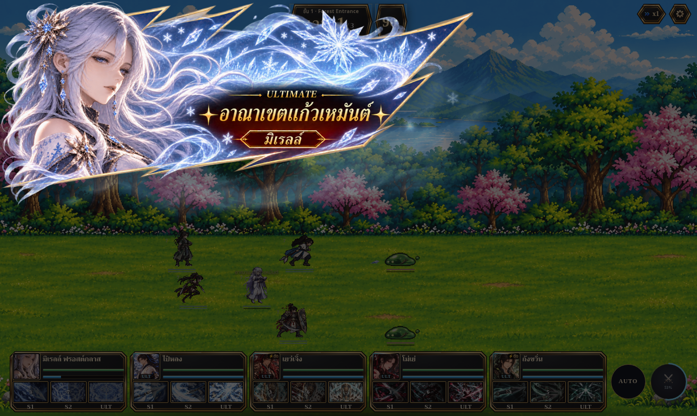
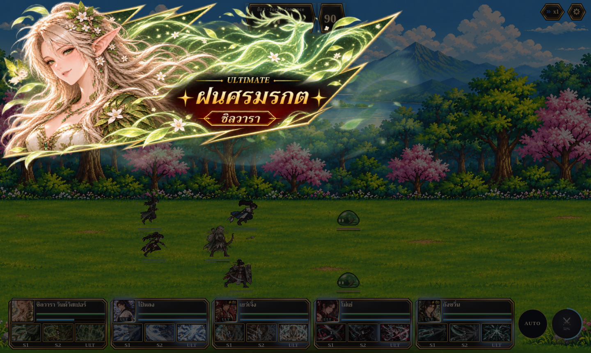

<!doctype html><meta charset="utf-8"><style>body{margin:16px;background:#10141c;color:#f8e5bd;font:16px system-ui;display:grid;grid-template-columns:1fr 1fr;gap:16px}figure{margin:0}figcaption{padding-bottom:8px}img{width:100%;display:block}</style><figure><figcaption>การ์ริก · 1440 × 860</figcaption><a href="garrick-1440.png"></a></figure><figure><figcaption>เคล · 1440 × 860</figcaption><a href="kael-1440.png"></a></figure><figure><figcaption>มิเรลล์ · 1440 × 860</figcaption><a href="mirelle-1440.png"></a></figure><figure><figcaption>ซิลวารา · 1440 × 860</figcaption><a href="sylvara-1440.png"></a></figure><figure><figcaption>เอลิรา · 1440 × 860</figcaption><a href="elira-1440.png"></a></figure><figure><figcaption>ไป๋หลง · ภาพอ้างอิงหลัก (อาร์ตต้นฉบับ)</figcaption><a href="../../../assets/ui/cutins/bailong-aura-italic.png"></a></figure>